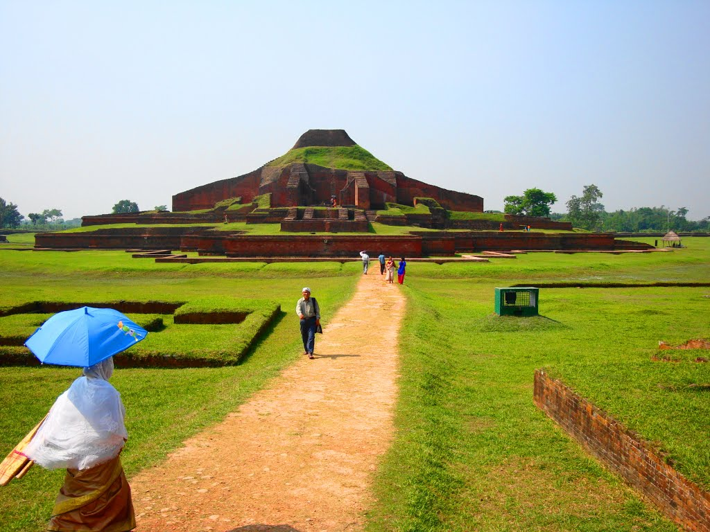
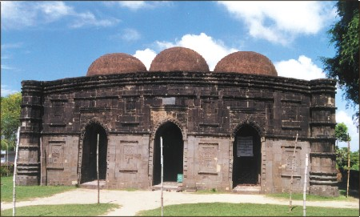
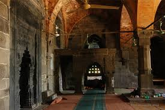
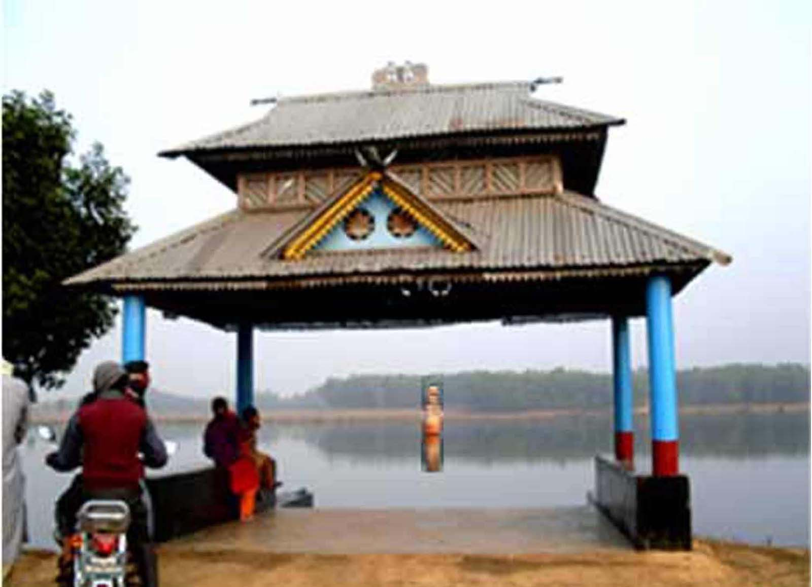
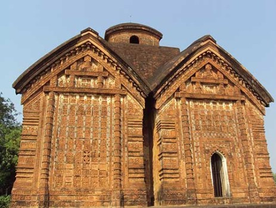

Paharpur naogaon 
Somapura Mahavihara in Paharpur, Badalgachhi Upazila, Naogaon District, Bangladesh is among the best known Buddhist viharas in the Indian Subcontinent and is one of the most important archaeological sites in the country.
Kusumba Mosque
  Basic information. Location, Naogaon, Bangladesh. Affiliation · Islam. Architectural description. Architectural type, Mosque. Architectural style, Islamic Architecture. Completed, 1558-59. Specifications. Length, 58. Width, 42. Kusumba Mosque (Bengali: কুসুম্বা শাহী মসজিদ) is a mosque in Manda Upazila of Naogaon ...
Dibar Dighi
 Dibar Dighi (Bengali: দ্বিবর দিঘি) is a tank in Patnitala Upazila, Naogaon District, Bangladesh. ... A View of Dibor Dighi.jpg. view of Dibor Dighi. Location, Patnitala Upazila Naogaon District, Bangladesh. Coordinates, 25°07′21″N 88°37′13″E ...
Jorbangla Temple
 It resembles two curved Bangali huts joined together from which this highly ornate brick temple derives its name of Jorbangla. Traditionally it was built by one Braja Krori, a ‘Tahsilder under Naweb of Bengal in the 18th century A.D. It stands on a single platform. The constituent of the temple is an anti-chamber and sanctuary. The frontage of the sanctuary is provided with three ornamental arched entrances. Its entrance facade is enriched with terracotta plaques depicting scenes from the Hindu Epic.One can start his journey for the monument from Pabna Bus Stoppage or Railway Station by any kind of motorized vehicle.